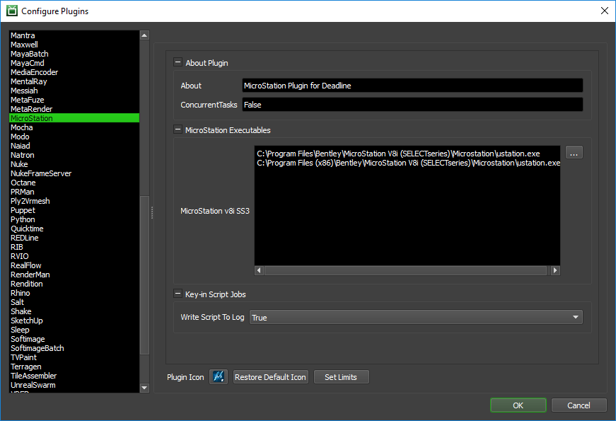

MicroStation¶
Job Submission¶
You can submit jobs from within MicroStation by installing the integrated submission script, or you can submit them from the Deadline Monitor. The instructions for installing the integrated submission script can be found further down this page.
To submit from within MicroStation (once the submitter has been installed), navigate to the Utilities->Render menu and select ‘Submit To Deadline’. Alternatively, you can use the Key-In ‘mdl load DLSubmit’ to bring up the submission UI (or ‘dlsubmit open’, once it’s already been loaded).
Submission Options¶
The general Deadline options are explained in the Job Submission documentation. The MicroStation-specific options are:
Operation: This is the type of MicroStation operation that will be performed by the Deadline Job. The different options are described below:
Animation Render: This will render the currently active Animation Script through Deadline.
Single View Render: This will render a single view as an image through Deadline.
Save Multiple Images: This will submit the currently active “Save Multiple Images” script as a Deadline Job, or use the specified SM file.
File Export: This will perform a File->Export operation as a Deadline Job (only a specific subset of these operations are currently available).
Print: This will perform a Print operation as a Deadline Job using the current settings, or the specified PSET file.
Script: This will perform a Script operation as a Deadline Job using a specified Key-in or Microstation VBA script.
Mode: This option is dependent on the type of Operation selected. Will either specify the Render Mode, or type of File Export to perform.
Color Model: This drop-down allows you to select the Color output of the Render (e.g. full RGB, GrayScale, MonoChrome, etc.)
Design File(s): This option is only relevant to the Monitor Submitter, and specifies which Design File(s) to use for the selected operation. Multiple design files may be specified in order to submit a batch of jobs. For the integrated Submitter, this will always be the DGN file that is currently open.
Submit Files with Job: This option, if checked, will submit files with the job, as opposed to leaving them in their current location.
View Number: The number of the Viewport that will be used for rendering (1-8).
View Name: (Optional) The name of the Saved View that will be applied before rendering.
Output Size X: The X (horizontal) component of the output size. Set to 0 to use current value, or maintain Aspect Ratio (depending on whether or not the Aspect is currently locked).
Output Size Y: The Y (vertical) component of the output size. Set to 0 to use current value, or maintain Aspect Ratio (depending on whether or not the Aspect is currently locked).
Environment: The name of the Environment to use for Luxology Renders. If the specified Environment is not found, the Untitled setup will be used.
Render Setup: The name of the Render Setup to use for Luxology Renders. If the specified Render Setup is not found, the Untitled setup will be used.
Light Setup: The name of the Light Setup to use for Luxology Renders. If the specified Light Setup is not found, the current light setup will be used.
Frame List: The list of Frames to render during Animation Renders.
Task Size: The number of Frames (Animation) or Script Entries (Save Multiple Images) to process per Deadline Task.
Settings File: The path to an operation-specific file that will specify additional settings for the operation (e.g. Print Settings file, DWG Export settings, Script file, etc.).
Use Current Settings: This checkbox is only available from the integrated submitter. If checked, a new settings file will be created and submitted with the Job, based on the settings in the current MicroStation session.
Output Path: The Path to the output that will be created. Frame padding should be represented by either ‘#’s or ‘0’s. Unrecognized file formats for the current operation will be changed to a default known format at render time.
Module (.mvba): The MVBA Module to be run from a specified Microstation VBA Project file.
Submodule (.mvba): The MVBA Sub to be run from a specified Microstation VBA Project file.
Key-in Arguments (.mvba): Any additional Key-in arguments to send to the specified Microstation VBA Script.
Design File Read Only: If this option is selected, Deadline will run the specified scene as read-only.
Convert Network Paths to UNC: If this option is selected, Deadline will attempt to convert paths from using Mapped Network Drives to using the full UNC network path.
Note that some of these parameters might not apply to all Operations/Modes. The Submitters will automatically disable or hide controls that are not relevant to the currently chosen Operation/Mode.
Pipeline Tools¶
When using the integrated submitter to submit through Microstation you have the ability to use any of the event plugins that you have enabled through the Deadline Monitor. This is done by opening the Pipeline Tools window via the Pipeline Tools button. This window is explained further in the Pipeline Tools documentation.
Plugin Configuration¶
You can configure the MicroStation plugin settings from the Monitor. While in power user mode, select Tools -> Configure Plugins and select the MicroStation plugin from the list on the left.
MicroStation Executables
This section defines the possible locations for ustation.exe for different versions of MicroStation. The Deadline Workers will look for the executable in each of these locations (in order) when it tries to render a MicroStation job.
Write Script To Log
This switch determines whether the contents of a script will be written to the Deadline Worker log. This only applies for script job operations. Writing the contents of an MVBA script is currently not supported.
Integrated Submission Script Setup¶
The following procedures describe how to install the integrated MicroStation submission script. This script enables MicroStation jobs to be submitted to Deadline directly from the MicroStation GUI. The following procedure has been tested in MicroStation v8i SS3 (08.11.09).
You can either run the Submitter installer or manually install the submission script.
Submitter Installer¶
Run the Submitter Installer located at
<Repository>/submission/MicroStation/Installers.
Manual Installation¶
First, copy the following files to: %localappdata%\Thinkbox\Deadline[VERSION]\submitters\MicrostationSubmitter (where [VERSION] is the major version of Deadline such as 9):
<Repository>\submission\MicroStation\Client\DLSubmit.dll
<Repository>\submission\MicroStation\Client\TBUtils.dll
<Repository>\submission\MicroStation\Client\TBUtils.ma
<Repository>\submission\MicroStation\Client\Thinkbox.Common.dll
<Repository>\submission\MicroStation\Client\DeadlineMenu.dgnlib
Next, copy the file:
<Repository>\submission\MicroStation\Client\DLSubmit_Config.cfg to <MicroStation install>\config\appl
where <MicroStation install> directory would be typically something like: "C:\Program Files (x86)\Bentley\MicroStation V8i (SELECTseries)\MicroStation".
Sticky and Default Settings¶
The integrated and Monitor MicroStation submitters have a feature that saves previously selected values for specific controls as Custom Properties in the design file that was used for submission, so that they can be restored automatically for future submissions.
The list of controls that are flagged to have “sticky” values is determined by the MicroStation_StickySettings.ini file in the submission/MicroStation/Main folder of your repository. In addition to this, there is also a MicroStation_DefaultSettings.ini file alongside it, which will control the Default values for all controls, when there are no sticky settings present/enabled. These files can be freely modified to fit your needs, but keep in mind that any changes made will affect all users.
- The priority of setting values is as follows:
Sticky Settings: For a given control, if there is a sticky value present in the scene file, it will be used first if the control is flagged as sticky in MicroStation_StickySettings.ini.
Default Settings: For a given control, if a (valid) default value is provided in MicroStation_DefaultSettings.ini, it will then be used.
Factory Defaults: If neither of the above are present, hardcoded defaults are provided. These cannot be changed.
Note that if any Sticky or Default value is invalid for any reason (e.g. a sticky Saved View was deleted), the control will fall back to the next level of default.
FAQ¶
Which versions of MicroStation are supported?
Currently, only MicroStation v8i SS3 (08.11.09) is officially supported. We will look to support different versions of MicroStation as they come out in the future, or as demand dictates.
Does the MicroStation plugin support Tile Rendering?
Not currently. The plan is to investigate the possibility of including this feature in MicroStation going forward.
I have an old version of the integrated submitter installed. How do I update to the latest version?
As of Deadline 7.2.1 we have changed the way we are installing the integrated submission script. In order to update from an older version you will need to remove the old submitter and then install the new one using the new method (submitter installer or manually). The files that need to be removed are:
C:\ProgramData\Bentley\MicroStation V8i (SELECTseries)\WorkSpace\Interfaces\MicroStation\default\DeadlineMenu.dgnlib
<MicroStation install>\mdlapps\DLSubmit.dll
<MicroStation install>\mdlapps\TBUtils.dll
<MicroStation install>\mdlapps\TBUtils.ma
<MicroStation install>\mdlapps\Thinkbox.Common.dll
<MicroStation install>\mdlapps\DeadlineMenu.dgnlib
After I install the MicroStation submitter the menu entry is not visible
If the menu entry does not appear it generally means that the configuration entry MS_GUIDGNLIBLIST is being modified by another cfg file. In this case you will want to append
%localappdata%\Thinkbox\Deadline<VERSION>\submitters\MicrostationSubmitter\*.dgnlibto the MS_GUIDGNLIBLIST variable, which can be done through the Workspace->Configuration Menu.where
<VERSION>is the Deadline major version, such as:10.
File exporting to DWG file format
You can use a *.dws DWG settings file when submitting a DWG export job to ensure a correctly compliant DWG file is created which is compatible with the 3rd party application you intend to import it into. Check with the developer of the 3rd party application developer to confirm the correct version/specification of DWG file format which it supports, if you have difficulty importing certain DWG files exported from MicroStation.
Error Messages and Meanings¶
This is a collection of known MicroStation error messages and their meanings, as well as possible solutions. We want to keep this list as up to date as possible, so if you run into an error message that isn’t listed here, please visit the Thinkbox Help Centre and let us know.
Currently, no error messages have been reported for this plugin.

{kind=link}
{kind=link}
{kind=link}
{kind=link}
{kind=link}
{kind=link}